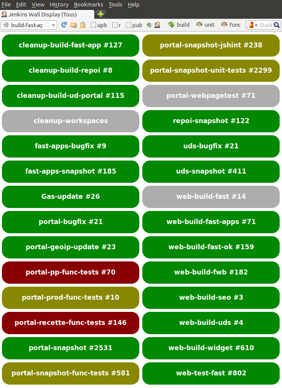

Les tests : pourquoi et comment ?
14h30 - 15h20 - Salle La Seine C

Axel Haustant, Xavier Renaudin et Grégory Paul
Développeur Python,
Équipe Data
Analyste fonctionnel,
Équipe PO
Développeur JavaScript,
Équipe Web
Je perds du temps à réfléchir comment tester alors que j’ai déjà écrit mon code…
Nos tests sont rouges depuis trop longtemps, du coup on ne les regarde plus…
Les développeurs disent tout tester et pourtant on trouve encore des bugs…
Le fonctionnel/IHM/Architecture du projet est trop compliqué pour pouvoir être testé…
Je ne pourrais tester que quand l’application sera terminée…
Une année de:

// Given
User user = new User();
user.setPlainTextPassword("password");
// When
String hashedPassword = user.getHashedPassword(salt);
// Then
assertThat(hashedPassword).isEqualTo("4ccc916...");
TestBadFormat1()
given_file_with_no_extension_import_should_fail()
public void should_drop_line_when_poi_with_no_name_is_read() {
when(matcherStepMock.run(any(FullGeoentity.class)))
.thenThrow(new RuntimeException("I should not be called"));
createInjector(...).getInstance(Launcher.class).run();
}
public void should_drop_line_when_poi_with_no_name_is_read() throws Exception {
// Given
reader.open(PoiReaderTest.class.getResourceAsStream("/invalid_poi.csv"));
try { // When
reader.readLine();
} catch(DroppingEntityException e) {
// Then
}
fail("readline should have thrown DroppingEntityException");
}
Factorisez les validations communes :
assertThat(xml).contains("<root>"));
assertThat(xml).contains("<child>");
assertThat(xml).contains("</child>");
assertThat(xml).contains("</root>");
assertThat(xml).isWellFormed();
@RunWith(Parameterized.class)
public class NumberTest {
private Integer number;
public MyUnitTest(Integer number) {
this.number = number;
}
@Parameters
public static Collection numbers() {
return Arrays.asList(1, 2, 3);
}
public void should_be_less_than_3() {
assertThat(this.number).isLessThan(4);
}
}
Quand on a un marteau en main, tout ressemble à un clou
Timeouts pour éviter les tests qui ne finissent pas
@Test(timeout=1000)
Ignorer certains tests en fonction des resources
@Test
public void post_a_comment() {
Assume.assumeTrue(canWriteInThatEnvironment());
}
@Before/@After vs @BeforeClass/@AfterClass
driver.findElement(By.name("q")).sendKeys("devoxx");
Thread.sleep(1000);
driver.findElement(By.name("q")).sendKeys("devoxx");
(new WebDriverWait(driver, 10)).until(
new ExpectedCondition() {
public Boolean apply(WebDriver d) {
return d.findElements(By.cssSelector(...);
}});
1 besoin/test ≠ 1 assertion/test ≠ n besoins/test
public void should_cleanup_kitchen() {
assertThat(makeCoffee()).isHot().isTasty();
assertThat(washTheDishes()).isDone().isClean();
}
public void should_make_coffee() {
assertThat(makeCoffee()).isHot().isTasty();
}
public void should_wash_the_dishes() {
assertThat(washTheDishes()).isDone().isClean();
}
assertTrue("bar".contains("foo"));
java.lang.AssertionError:
at org.junit.Assert.fail(Assert.java:91)
assertThat("foo").contains("bar");
java.lang.AssertionError:
Expected: a string containing "bar"
but: was "foo"
assertEquals(200, status)
java.lang.AssertionError:
expected:<200> but was:<301>
assertEquals("La page d’accueil ne répond pas",
200, status);
java.lang.AssertionError:
La page d’accueil ne répond pas
expected:<200> but was:<301>
Corruption de données ? Le service répond ?
Un test sera très efficace pour retrouver un bug déjà existant.
Cette présentation et ses démos sont disponibles sur : http://valtechtechno.github.com/devoxx-2013-tests-pourquoi-comment/ (slides) https://github.com/ValtechTechno/devoxx-2013-tests-pourquoi-comment (sources)

{kind=link}
{kind=link}
{kind=link}
{kind=link}
{kind=link}